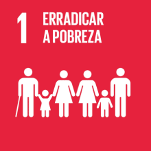
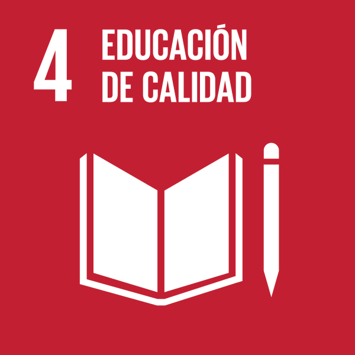
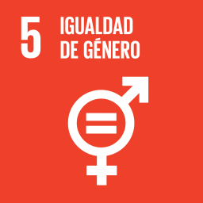

Los 17 Objetivos de Desarrollo Sostenible (ODS) de la ONU, también conocidos como Agenda 2030, son una serie de metas globales establecidas para abordar los desafíos sociales, económicos y ambientales más apremiantes que enfrenta nuestro mundo. Estos objetivos buscan promover la prosperidad, proteger el planeta y asegurar el bienestar de las personas. A continuación, te presento un resumen de los 17 ODS:
Fin de la pobreza: Erradicar la pobreza en todas sus formas y dimensiones, asegurando que todas las personas puedan acceder a los recursos básicos necesarios para vivir una vida digna.
Hambre cero: Lograr la seguridad alimentaria y una nutrición adecuada para todos, garantizando el acceso a suficientes alimentos nutritivos y promoviendo la agricultura sostenible.

Salud y bienestar: Garantizar una vida saludable y promover el bienestar para todas las edades, asegurando el acceso a servicios de salud de calidad y promoviendo la prevención de enfermedades.

Educación de calidad: Garantizar una educación inclusiva, equitativa y de calidad para todos, promoviendo oportunidades de aprendizaje a lo largo de la vida.
Igualdad de género: Lograr la igualdad de género y empoderar a todas las mujeres y niñas, eliminando la discriminación y la violencia basada en el género.
